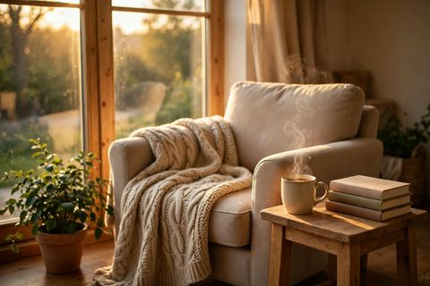
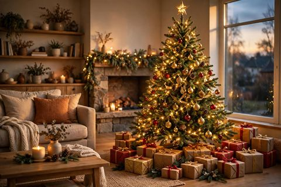
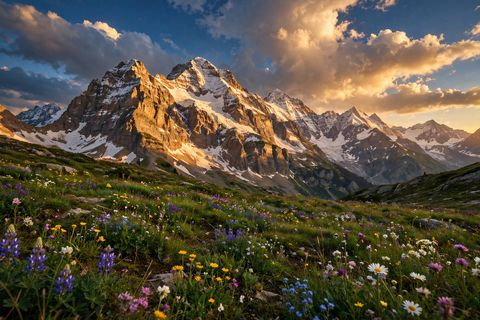
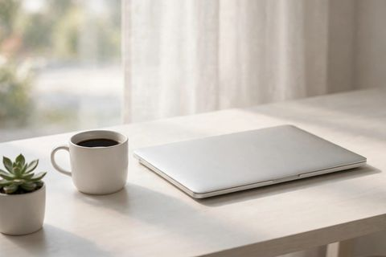
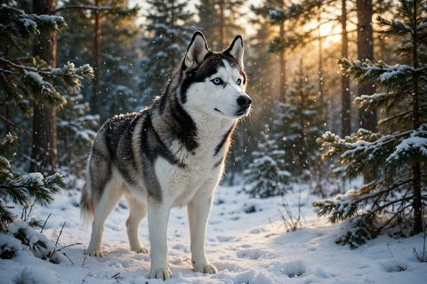
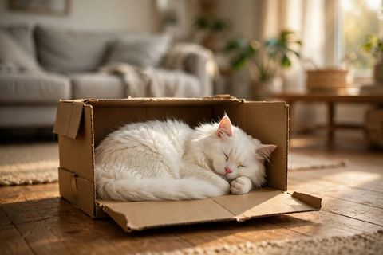

Portofolio Kami
Klik untuk membuka portofolio lengkap di platformnya.
Dreamstime
Per 20 Nov 2026. Foto dijual dengan lisensi Royalty-Free di Dreamstime.
Lihat di DreamstimeAdobe Stock
Per 20 Nov 2026. Foto dijual di Adobe Stock sebagai kontributor.
Lihat di Adobe StockContoh Galeri
12 contoh foto dari 12 tema, dikelompokkan per tema. Semua dibuat dengan AI.
Benda
Benda sehari-hari — objek sederhana untuk kebutuhan desain.

Cozy
Suasana cozy — hangat dan nyaman.

Natal
Tema Natal — dekorasi dan suasana liburan akhir tahun.

Travel
Tema travel — perjalanan dan petualangan.

Alam
Tema alam — pemandangan dan keindahan alam.

Bunga & Tanaman
Bunga dan tanaman — hijau dan segar.

Dessert & Minuman
Dessert dan minuman — manis dan menyegarkan.

Olahraga & Kebugaran
Olahraga dan kebugaran — aktif dan sehat.

Kota & Arsitektur
Kota dan arsitektur — bangunan dan kehidupan kota.
Workspace & Teknologi
Workspace dan teknologi — ruang kerja modern.

Hewan
Hewan — satwa di alam.

Kucing
Kucing — sahabat berbulu.
